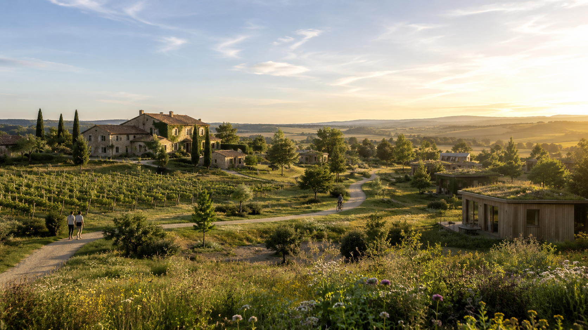
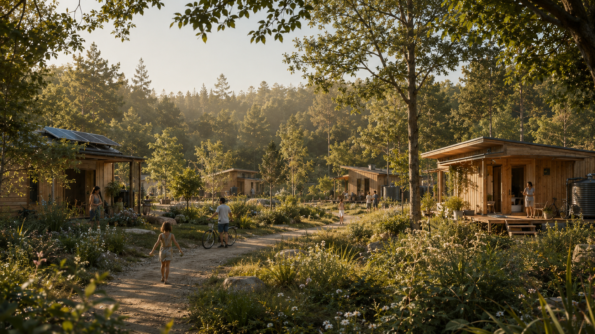

Un domaine de 880 hectares en Occitanie — avec 5 000 m² de bâti existant comme base de départ, mais la grande majorité du village sera en habitat léger : tiny houses, cabanes, yourtes, structures légères et réversibles. Objectif : un village régénératif de 300 familles (500 à 750 personnes), positif pour la région.
Ce projet n'est pas encore un village abouti. C'est un appel à des porteurs-bâtisseurs : des personnes prêtes à mettre leur énergie, leurs compétences et leur temps dans la création concrète des piliers du lieu. Ouvert aussi aux habitants de la région — pas besoin de vivre sur place pour contribuer. Un projet pensé sur 20 ans maximum, avec possibilité de renégociation pour assurer la continuité.
20 ans, c'est un horizon de départ — rassurant pour les collectivités, cohérent avec l'habitat léger. Si le projet démontre son utilité et son intégration locale, il pourra être prolongé, transformé ou pérennisé. Ce n'est pas une date d'expulsion.
DEMAIN·S ne fournit pas de logements clés en main. Chaque habitant vient avec son propre habitat léger — tiny house, cabane, yourte, module démontable ou autre solution validée. Le projet fournit l'emplacement, les infrastructures communes et le cadre collectif.
La contribution mensuelle n'est pas un loyer. Elle finance l'accès au projet, les infrastructures communes, la gouvernance et les services collectifs. Le statut exact de l'emplacement — inclus dans la contribution ou avec options payantes selon raccordement — est en cours d'arbitrage juridique.
Le village ne sera pas une juxtaposition de tiny houses isolées. Des infrastructures communes sobres et légères sont prévues : blocs sanitaires, douches, points d'eau, électricité, espaces techniques — en bois, réseaux visibles, robustes et réversibles. Sobre, pas précaire.
DEMAIN·S est un projet pionnier de village régénératif en Occitanie. Un lieu où l'argent, le temps et les compétences des habitants servent à produire des biens communs : nourriture, éducation, soins, culture, accueil, infrastructures, solidarité, bien-être.
Un lieu où la contribution à la communauté permet de créer une qualité de vie supérieure, accessible, mutualisée — avec des services disponibles au prix coûtant, à prix réduit, ou gratuitement selon les choix collectifs.
Mais DEMAIN·S n'est pas seulement un lieu de vie. C'est aussi un lieu de création. Il y aura mille choses à faire : produire de la nourriture, créer une école, imaginer une maison de naissance, accueillir des personnes âgées, organiser des festivals, développer des retraites, ouvrir des résidences d'artistes, construire des habitats légers, transmettre des savoirs, prendre soin du vivant.
Pour contrebalancer la vie en habitat léger et créer une qualité de vie réelle, des lieux communs de confort et de culture seront au cœur du village : salle de spectacle et cinéma en plein air, sauna collectif, bains, espace bien-être, bibliothèque, atelier arts, salle de musique, terrain de sport. L'habitat est sobre — la vie commune est riche.
Un laboratoire vivant. Un hub ouvert. Un village à construire.


20 ans, c'est un horizon de départ — rassurant pour les collectivités, cohérent avec l'habitat léger. Si le projet démontre son utilité et son intégration locale, il pourra être prolongé, transformé ou pérennisé. Ce n'est pas une date d'expulsion.
DEMAIN·S ne fournit pas de logements clés en main. Chaque habitant vient avec son propre habitat léger — tiny house, cabane, yourte, module démontable ou autre solution validée. Le projet fournit l'emplacement, les infrastructures communes et le cadre collectif.
La contribution mensuelle n'est pas un loyer. Elle finance l'accès au projet, les infrastructures communes, la gouvernance et les services collectifs. Le statut exact de l'emplacement — inclus dans la contribution ou avec options payantes selon raccordement — est en cours d'arbitrage juridique.
Le village ne sera pas une juxtaposition de tiny houses isolées. Des infrastructures communes sobres et légères sont prévues : blocs sanitaires, douches, points d'eau, électricité, espaces techniques — en bois, réseaux visibles, robustes et réversibles. Sobre, pas précaire.
Convaincu·e par la vision ? Le cercle fondateur se constitue maintenant.
DEMAIN·S repose sur une idée simple : la communauté se donne les moyens de produire elle-même une partie essentielle de son bien-être. Chaque habitant contribue selon un cadre clair. Cette contribution est distincte du logement — elle est destinée à la communauté, à ses infrastructures, ses services et ses projets.
Le socle minimal pour chaque habitant. Finance le fonctionnement commun, la gouvernance, l'entretien, les projets de base et la solidarité.
par an — sur une base indicative de 500 personnes × 100 € × 12 mois
En plus de la base, chacun choisit selon ses moyens, son temps, ses compétences et sa situation. Certains contribueront davantage financièrement, d'autres en temps, d'autres combineront les deux. Les proportions seront ajustées par la communauté.
/ mois supplémentaires
250 pers. × 300 € × 12 = 900 000 €/an
du temps (1 jour/sem.)
≈ équivalent de 300 €/mois
Contribution de base + contribution renforcée :
par an en contributions financières
(600k base + 900k renforcé)
250 × 52 jours = 13 000 journées-hommes par an
équivalents temps plein au service de la communauté
Pas seulement de financer une idée. Mais de faire fonctionner une école, cultiver de la nourriture, accueillir des groupes, entretenir le lieu, organiser des soins, produire des événements, créer des ateliers, gérer des espaces communs, développer des projets économiques.
Les contributions en argent et en temps servent à construire une qualité de vie partagée. Certains services pourront être accessibles gratuitement, d'autres au prix coûtant, d'autres à prix réduit. Le modèle exact sera décidé par la communauté, en fonction des priorités, des ressources et de la maturité du projet.
Maraîchage, vergers, cultures, pain, transformation, cuisine, repas communs.
Produire une part importante de l'alimentation. Réduire les coûts, améliorer la qualité de vie.Pédagogie active, apprentissage par la nature, transmission intergénérationnelle.
Un cadre éducatif ancré dans le vivant, à portée de pas.Accompagnement autour de la naissance, de la parentalité, du post-partum et des premiers âges de la vie.
Replacer la naissance et le soin au cœur du village.Habitat ou lieu de vie pour les aînés, avec dignité, lien social, entraide et participation collective.
Éviter l'isolement. Créer une vraie continuité entre les générations.Soins du corps, santé préventive, accompagnement psychologique, pratiques collectives.
Faire du bien-être une infrastructure commune.Outils partagés, artisanat, réparation, construction légère, formation aux savoir-faire.
Réduire les coûts, partager les compétences, créer une culture du faire.Objets, vêtements, meubles, matériaux, outils, recyclage, troc, réparation.
Transformer la consommation en dynamique communautaire.Accueil de visiteurs, séminaires, retraites, formations, résidences, stages.
Générer du chiffre d'affaires et faire rayonner le lieu.Festival de musique, festival du vivant, conférences, marchés, fêtes communautaires.
Faire du domaine un lieu culturel, attractif et ouvert.Accueil d'artistes, chercheurs, écrivains, artisans, créateurs et porteurs de projets.
Faire de la culture une infrastructure vivante.Agriculture régénérative, habitat léger, gouvernance partagée, santé intégrative, cuisine, coopération.
Faire du village un lieu d'apprentissage et de diffusion.Accueil de télétravailleurs, entrepreneurs, chercheurs et créatifs en séjour.
Travailler dans un cadre inspirant, sans être isolé.Table commune ouverte aux visiteurs, collaboration avec des chefs, événements gastronomiques.
La table comme lieu de rencontre et de rayonnement.Vous avez une compétence à apporter ? Un pilier à porter ?
Le projet repose sur une gouvernance partagée, encadrée par une convention claire, qui définit les droits, les devoirs, les contributions, les processus de décision et les règles de vie du lieu.
La gouvernance sera facilitée par un design sur mesure des prises de décision : cercles thématiques, rôles définis, procédures d'arbitrage, transparence budgétaire, espaces de discussion, règles d'entrée et de sortie.
L'objectif n'est pas que tout le monde décide de tout, tout le temps. L'objectif est que chacun puisse contribuer là où il est compétent, concerné et légitime.
Une communauté ne fonctionne pas par magie. Elle fonctionne parce que son cadre est bien conçu.
DEMAIN·S cherche des porteurs-bâtisseurs pour imaginer et mettre en place les grands piliers du lieu. Chaque pilier devra être pensé comme un projet à part entière : son modèle économique, son fonctionnement, ses règles, ses besoins humains et son lien avec la communauté.
Maraîchage, vergers, vignes, cultures, transformation alimentaire, agriculture régénérative.
Sert d'abord la communauté. Peut aussi produire des revenus externes.Pédagogie active, ancrée dans la nature, l'expérimentation, la coopération et la transmission.
Apprendre autrement. Au cœur du vivant.Accompagnement autour de la naissance, des jeunes parents, de la petite enfance et du soin familial.
Accueillir la vie dans un cadre humain et communautaire.Lieu de vie pour les aînés ou personnes ayant besoin d'un cadre plus accompagné.
Vieillir dans un village, pas dans l'isolement.Table commune pour les habitants, visiteurs, événements et rencontres.
Le cœur battant du village.Soins du corps, accompagnement, santé préventive, pratiques collectives, soutien aux personnes.
Un village qui prend soin de ses habitants.Espace connecté pour télétravailleurs, entrepreneurs, chercheurs, créatifs et indépendants.
Travailler dans un cadre inspirant.Outils partagés, artisanat, réparation, FabLab, construction légère, maintenance du lieu.
Réduire les coûts. Partager les compétences.Objets, meubles, vêtements, livres, matériaux, outils en circulation.
La consommation devient circulaire.Accueil d'artistes, chercheurs, formateurs, artisans et porteurs de savoirs.
Le village comme lieu de création et de diffusion.Rencontres, festivals, retraites, conférences, marchés, fêtes et stages.
Le lieu attire du monde, crée du lien, génère des revenus.Silence, méditation, spiritualité libre, contemplation et reconnexion.
Un village nourrit aussi les âmes.Intéressé·e par la gouvernance ou la structure du projet ?
Avec 1 500 000 € de contributions financières annuelles, le projet couvre une base importante de fonctionnement. Mais la vraie puissance réside dans les 13 000 journées-hommes disponibles par an.
Cette force de travail permet de produire en interne, de réduire les coûts, d'améliorer le lieu en continu et de développer des activités génératrices de revenus.
Les revenus des activités extérieures — hébergements, événements, agriculture, formations — ne remplacent pas la contribution des habitants. Ils la renforcent.
équivalents temps plein
au service de la communauté chaque année
de contributions financières annuelles
soit +370 000 € au-delà des charges indicatives
Le modèle juridique, économique et communautaire est en cours de structuration. Ces chiffres sont des projections indicatives.
Dans un modèle classique, chaque famille paie séparément pour tout : logement, alimentation, garde d'enfants, école, soins, voiture, loisirs, vacances, soutien, services, outils, espaces de travail.
À DEMAIN·S, une partie de ces besoins est mutualisée, produite localement ou organisée collectivement.
La contribution à la communauté permet de financer et de produire des services qui améliorent directement la vie quotidienne. Ce n'est pas une charge en plus. C'est une manière de déplacer une partie des dépenses individuelles vers une production collective plus efficace, plus humaine et plus résiliente.
Ce que la communauté produit ensemble
Le modèle économique vous parle ? Envie d'en discuter ?
Le domaine a vocation à devenir un hub régional : un lieu d'accueil, de passage, de transmission et d'expérimentation — un vrai tiers-lieu ancré dans son territoire.
DEMAIN·S n'est pas fermé aux gens qui vivent sur place. Les habitants de la région — villages voisins, agriculteurs, artisans, soignants, enseignants, familles, retraités actifs — peuvent contribuer au projet, utiliser ses infrastructures, participer à sa vie collective, sans nécessairement y habiter.
Un médecin du village voisin peut tenir une permanence. Un artisan local peut animer un atelier. Une famille de la région peut amener ses enfants à l'école vivante. Un agriculteur voisin peut vendre sa production au marché du domaine. Une association locale peut organiser un événement.
C'est cette porosité avec le territoire qui fait de DEMAIN·S un projet positif pour la région — pas une enclave, mais un pôle. Un centre de rencontre, de ressources et d'innovation sociale ouvert à tous.
Des familles viendront y vivre. Des visiteurs viendront s'y ressourcer. Des entreprises viendront y organiser des séminaires. Des artistes viendront y créer. Des chercheurs viendront y observer. Et la région entière pourra y trouver quelque chose.
Les membres du cercle fondateur posent les bases du projet : ils définissent la constitution, choisissent le lieu, structurent la gouvernance, et prennent les premières décisions collectives avant l'arrivée des autres habitants.
Ils ne gèrent pas forcément un pilier opérationnel. Leur rôle est stratégique et fondateur. Ce sont eux qui rendent le village possible.
Les porteurs de piliers prennent en charge un domaine concret du village : la ferme, l'école, le restaurant, le centre de soin, les événements… Ils conçoivent, lancent et font vivre leur pilier.
Un porteur de pilier peut être membre du cercle fondateur — ou rejoindre plus tard. Ce qui compte : la compétence, l'engagement et la capacité à porter une responsabilité réelle.
Une même personne peut être les deux. Et il est possible de rejoindre le projet comme habitant, sans être ni l'un ni l'autre.
Nous ne cherchons pas seulement des personnes intéressées par l'idée de vivre autrement. Nous cherchons des personnes capables de contribuer à la mise en place concrète du projet.
Des porteurs-bâtisseurs. Des personnes qui veulent prendre en main un pilier. Des personnes qui savent créer, organiser, décider, construire, cultiver, enseigner, soigner, accueillir, réparer, transmettre.
Un village ne naît pas d'un plan parfait. Il naît d'un premier cercle de personnes alignées, compétentes et prêtes à agir.
Pas d'engagement définitif à ce stade. Juste une première conversation.
Merci. Votre message est bien reçu.
Nous reviendrons vers vous sous 48h
pour un premier échange.
DEMAIN·S est porté par l'association Village d'Avenir, en cours de constitution. L'association a vocation à devenir le cadre juridique et éthique du projet — transparent, gouverné collectivement, ouvert à tous ceux qui s'engagent.
D'autres partenaires — institutions, associations, collectivités, entreprises — rejoindront le projet au fur et à mesure de son avancement.
Le cercle fondateur, c'est la première étape. Une fois les bases posées — lieu validé, gouvernance en place, premiers piliers constitués — le projet ouvrira plus largement ses portes : à des habitants, à des partenaires locaux, à des personnes qui souhaitent simplement participer sans nécessairement s'engager dès le début.
Pour l'instant : un premier cercle restreint, aligné, prêt à agir.